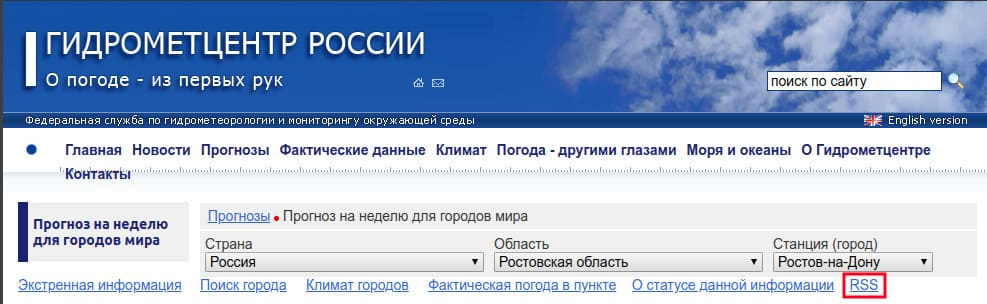
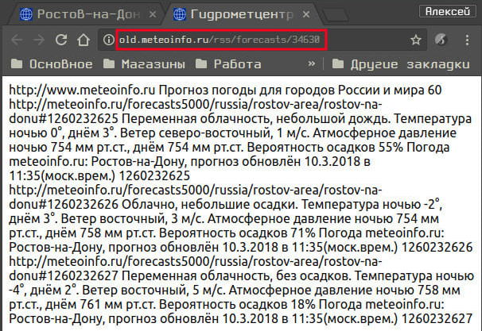

Погода в xmobar
Стандартный плагин
Чтобы отобразить в xmobar информацию о погоде, используя его стандартный плагин, необходимо добавить в файл .xmobarrc следующее:
...
commands = [
...
Run Weather "XXXX" ["-t","<tempC>°C"] 36000,
...
]
...
, template = " %StdinReader% }{ ... %weather% ... }
где XXXX - код метеостанции вашего города, согласно спецификации National Oceanic and Atmospheric Administration (NOAA). Найти код своего города можно в этом документе. Нужно сказать, что код вы найдёте при одном условии: в городе, в котором вы живёте должен быть аэропорт.
Аргументы, которые можно использовать: station, stationState, year, month, day, hour, windCardinal, windAzimuth, windMph, windKnots, windMs, windKmh visibility,skyCondition, tempC, tempF, dewPointC, dewPointF, rh, pressure.
Bash скрипт для вывода погоды в xmobar
Я живу в Ростове-на-Дону. В конце 2017 года у нас запустили в эксплуатацию новый аэропорт Платов. Код метеостанции для него я не нашёл, а информация по коду метеостанции старого аэропорта не обновляется с прошлого года. Если посмотреть http://tgftp.nws.noaa.gov/data/observations/metar/decoded/URRR.TXT (URRR - это код метеостанции старого аэропорта в Ростове), то увидим, что информация менялась последний раз 31.12.2017г.:
Rostov-Na-Donu, Russia (URRR) 47-16N 039-49E 75M Dec 31, 2017 - 06:30 PM EST / 2017.12.31 2330 UTC Wind: from the S (180 degrees) at 7 MPH (6 KT):0 Visibility: less than 1 mile:0 Sky conditions: obscured Weather: light drizzle; fog; Cumulonimbus clouds observed Temperature: 42 F (6 C) Dew Point: 42 F (6 C) Relative Humidity: 100% Pressure (altimeter): 29.88 in. Hg (1012 hPa) ob: URRR 312330Z 18003MPS 0100 R04/0450N -DZ FG VV001 06/06 Q1012 R22/290056 TEMPO 0300 -SHRA FG BKN001 BKN020CB RMK QBB040 MAST OBSC QFE752/1003 cycle: 23
Вообще, я не расстроился по этому поводу. Наблюдать в своём xmobar текущее значение температуры? Зачем? У меня есть градусник на кухне за окном, который показывает точную температуру. Зато этот повод послужил толчком к написанию скрипта, который отображал бы необходимую мне информацию о погоде.
Сразу скажу, что я не сторонник погодных плагинов с прогнозом на несколько дней, с кучей иконок и ненужной мне информацией типа время восхода или захода солнца. От прогноза на завтрашний день мне нужно всего два значения: дневная температура и вероятность осадков.
Парсить я решил RSS ленту с сайта Гидрометцентра России. Для начала найдём саму ленту:


Теперь лента у нас есть. Как видно, в ней присутствует прогноз на три дня. Мне же нужен только завтрашний день. Пишем скрипт, который будет выдавать нам прогноз только на завтрашний день. Обзавём скрипт weather:
#!/bin/bash
s1="OK"
COLOR="#709180"
CITY_URL="http://old.meteoinfo.ru/rss/forecasts/34630"
SITE="`curl -Is $CITY_URL | head -1 | grep -Eo '.{3}$'`"
if [[ $SITE == *"$s1"* ]]; then
TOMORROW_TEMP="`wget -O - $CITY_URL 2>/dev/null | \
grep -w 'Температура' | sed '2!d' | \
sed -r 's/^[^Т]+//' | sed -r 's/^[^д]+//' | \
sed -r 's/°.+//' | sed 's/днём //'`"
POSSIBILITY_RAIN="`wget -O - $CITY_URL 2>/dev/null | \
grep -w 'Вероятность' | sed '2!d' | \
sed -r 's/^[^ф]+//' | sed -r 's/^[^к]+//' | \
sed 's/ков //' | grep -o '^[^<]*'`"
echo "<fc=$COLOR>$TOMORROW_TEMP°C($POSSIBILITY_RAIN)</fc>"
else
echo "n/a"
fiРезультатом работы скрипта будет строчка:
4°C(71%)где
4°C - значение температуры;
(71%) - вероятность осадков.
Остаётся добавить вывод скрипта в xmobar. Добавляем в наш .xmobarrc следующие:
...
commands = [
...
Run Com "/путь_до_нашего_скрипта/weather" [] "weather" 3600,
...
]
...
, template = " %StdinReader% }{ ... %weather% ... }
Отмечу один момент. Обновление выбранного мною сайта происходит один раз в день около 11:30 по Московскому времени. Поэтому, до обновления в xmobar мы видим текущие показания, а после обновления уже прогноз на завтрашний день.